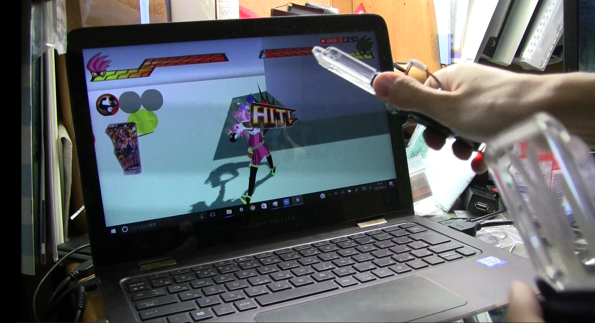
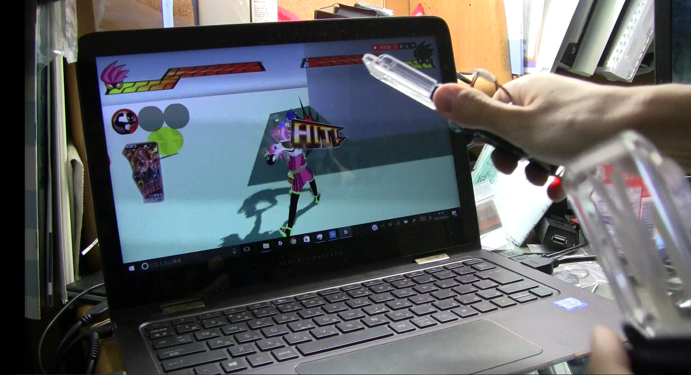
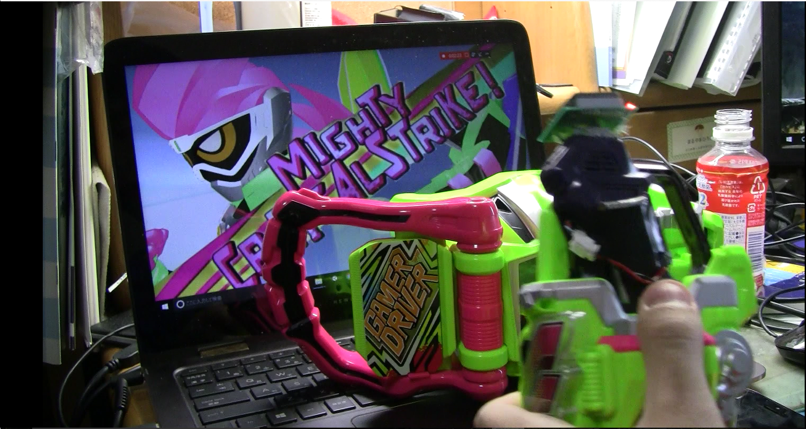
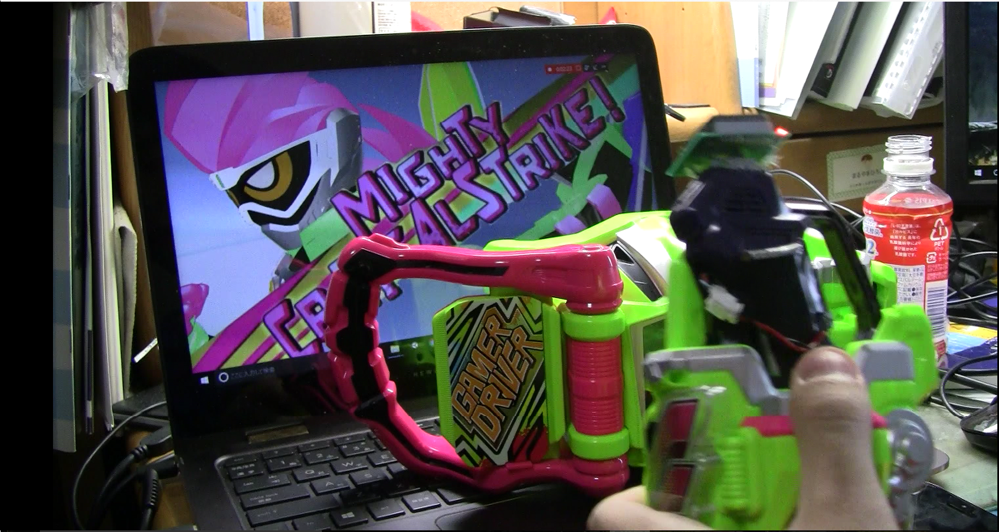

作品紹介-I'm a 仮面ライダー
作品説明
自分が仮面ライダーになったかのように遊べるゲームです。
加速度センサで簡単操作
加速度センサと物理ボタン二つを備えたコントローラを両手に持ってキャラクターを操作します。
コントローラを前後左右に傾けることでキャラクタがその方向に移動し、左右のコントローラを振ることで
攻撃を出すことができます。
 

市販のベルトと超連動
また、コントローラを市販の「DXゲーマドライバー」に装填すると
別の姿に大変身するので、テレビさながらの変身アクションを行うことができます。
必殺技も市販の「DXキメワザスロットホルダー」にコントローラを装填することで発動するので、
本格的なライダーアクションを楽しめます。
 
戻る

戻る